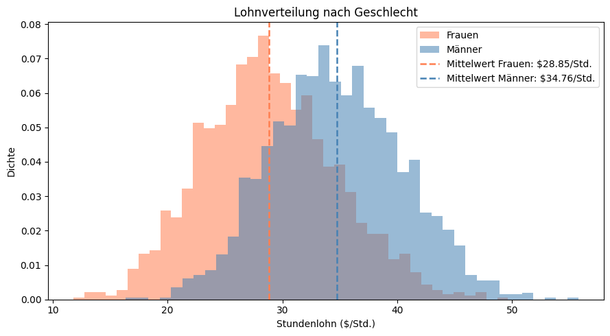
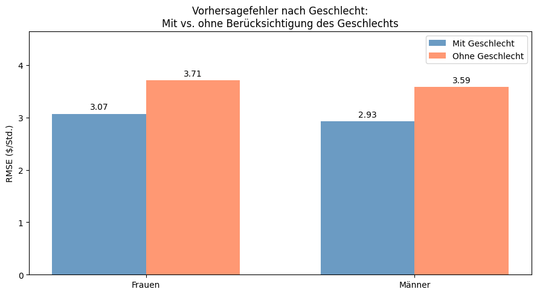
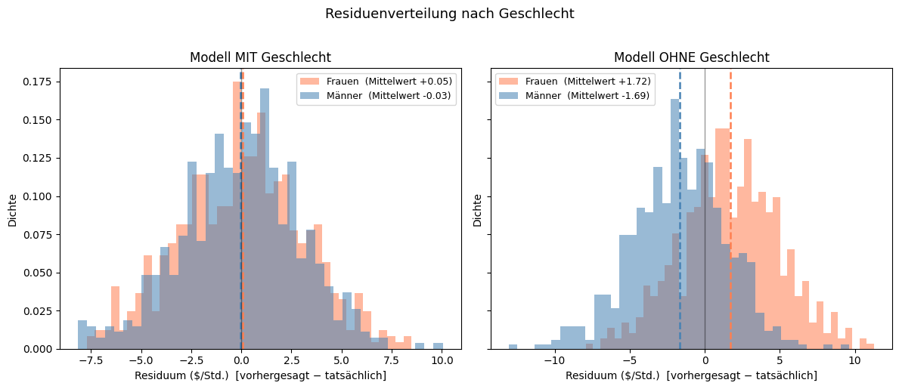

1. Verzerrung durch ausgelassene Variablen (Omitted Variable Bias)#
Was ist eine Verzerrung durch ausgelassene Variablen?#
Stell dir vor, du willst herausfinden, welche Faktoren den Stundenlohn einer Person beeinflussen, etwa Alter, Bildung und Berufserfahrung. Deine Formel funktioniert einigermaßen gut, aber du hast einen wichtigen Faktor vergessen einzubeziehen: ob die Person sich als männlich oder weiblich identifiziert. Da sich Löhne zwischen Männern und Frauen in der Realität systematisch unterscheiden, wird das Modell, das den Einfluss jedes Faktors bewerten soll, “verwirrt”. Es versucht, alle mit einem einzigen durchschnittlichen Muster zu beschreiben, was für jede Gruppe in eine andere Richtung falsch liegt.
Das nennt man Omitted Variable Bias (Verzerrung durch ausgelassene Variablen): Wenn ein wichtiger Faktor in einem Modell fehlt, werden dessen Vorhersagen systematisch verzerrt, oft auf eine Weise, die bestimmte Gruppen benachteiligt.
In diesem Tutorial verwenden wir einen synthetischen (künstlich erzeugten) Lohndatensatz, um genau zu sehen, was passiert, wenn wir das Geschlecht aus einem Lohnvorhersagemodell weglassen.
# ── Benötigte Werkzeuge importieren ────────────────────────────────────────
import pandas as pd # Laden und Verarbeiten von Daten
import numpy as np # numerische Operationen
import matplotlib.pyplot as plt # Diagramme erstellen
from sklearn.model_selection import train_test_split # Daten in Trainings-/Testmenge aufteilen
from sklearn.linear_model import LinearRegression # unser Lohnvorhersagemodell
from sklearn.metrics import mean_squared_error # Vorhersagefehler messen
import ipywidgets as widgets # interaktive Checkboxen & Buttons
from IPython.display import display, clear_output
import warnings
warnings.filterwarnings('ignore')
# ── Datensatz laden ─────────────────────────────────────────────────────────
# wages.csv wurde mit generate_wages.py erzeugt
df = pd.read_csv("wages.csv")
print(f"{len(df)} Arbeitnehmer mit je {len(df.columns)} Variablen geladen.")
df.head()
4000 Arbeitnehmer mit je 7 Variablen geladen.
| age | education | experience | hours_per_week | tenure | sex | wage | |
|---|---|---|---|---|---|---|---|
| 0 | 51 | 12 | 33.983332 | 31.537400 | 0.107181 | 0 | 32.409885 |
| 1 | 41 | 13 | 25.000000 | 41.498692 | 4.303800 | 1 | 34.320540 |
| 2 | 32 | 15 | 14.000000 | 32.797004 | 0.812251 | 1 | 28.138393 |
| 3 | 43 | 14 | 23.541497 | 38.857087 | 0.062242 | 1 | 34.895287 |
| 4 | 33 | 15 | 9.086144 | 23.024405 | 0.553826 | 0 | 22.008015 |
# ── Daten für die Modellierung vorbereiten ─────────────────────────────────
# Die Spalten, die wir als Eingaben zur Lohnvorhersage nutzen
feature_cols = ['age', 'education', 'experience', 'hours_per_week', 'tenure', 'sex']
# Gut lesbare Bezeichnungen für das interaktive Widget weiter unten
feature_labels = {
'age': 'Alter',
'education': 'Bildung (Jahre)',
'experience': 'Erfahrung (Jahre)',
'hours_per_week': 'Std./Woche',
'tenure': 'Betriebszugehörigkeit (Jahre)',
'sex': 'Geschlecht',
}
# Datensatz aufteilen: 70% zum Trainieren des Modells, 30% zum Testen
df_train, df_test = train_test_split(df, test_size=0.3, random_state=42)
df_test = df_test.copy() # vermeidet eine pandas-Warnung, wenn wir später Spalten hinzufügen
# Eingabespalten von der vorherzusagenden Zielgröße trennen
X_train = df_train[feature_cols]
X_test = df_test[feature_cols]
y_train = df_train['wage']
y_test = df_test['wage']
# RMSE (Root Mean Squared Error) = durchschnittlicher Vorhersagefehler in $/Std. — niedriger ist besser
def rmse(y_true, y_pred):
return np.sqrt(mean_squared_error(y_true, y_pred))
print(f"Trainingsmenge: {len(df_train)} Arbeitnehmer | Testmenge: {len(df_test)} Arbeitnehmer")
Trainingsmenge: 2800 Arbeitnehmer | Testmenge: 1200 Arbeitnehmer
Warum spielt das Geschlecht für die Lohnvorhersage eine Rolle?#
Bevor wir Modelle bauen, schauen wir uns an, wie sich die Löhne über die beiden Gruppen verteilen. Die Grafik unten ist ein Histogramm: Jeder Balken zeigt, wie viele Personen einen Lohn in einem bestimmten Bereich verdienen. Wenn die beiden Gruppen sehr unterschiedliche Verteilungen haben, wird ein Modell, das die Gruppenzugehörigkeit ignoriert, Schwierigkeiten haben, die Löhne für beide Gruppen genau vorherzusagen.

Mittlerer Lohn — Frauen: $28.85/Std. | Männer: $34.76/Std.
Differenz: $5.91/Std.
Die beiden Lohnverteilungen sind klar gegeneinander verschoben. Ein Modell, das Männer und Frauen nicht unterscheiden kann, wendet auf alle eine einzige “Durchschnitts”-Lohnformel an, die den Lohn von Frauen systematisch über- und den von Männern unterschätzt.
Training zweier Modelle#
Wir trainieren nun zwei lineare Regressionsmodelle auf denselben Daten, die versuchen, einen linearen Zusammenhang zwischen den Eingabevariablen (wie Alter oder Bildung) und dem Lohn zu finden.
Modell MIT Geschlecht: nutzt Alter, Bildung, Erfahrung, Wochenstunden, Betriebszugehörigkeit und Geschlecht
Modell OHNE Geschlecht: nutzt alles außer dem Geschlecht via
.drop(columns=['sex'])
# ── Modell MIT Geschlecht ───────────────────────────────────────────────────
lr_with = LinearRegression()
lr_with.fit(X_train, y_train)
# ── Modell OHNE Geschlecht ──────────────────────────────────────────────────
# Eine Spalte aus einem DataFrame zu entfernen ist denkbar einfach:
lr_without = LinearRegression()
lr_without.fit(X_train.drop(columns=['sex']), y_train)
# ── Vorhersagen und Residuen als neue Spalten in der Testtabelle speichern ──
# So können wir in den nächsten Schritten leicht nach Geschlecht filtern — ohne Index-Tricks.
df_test['pred_with'] = lr_with.predict(X_test)
df_test['pred_without'] = lr_without.predict(X_test.drop(columns=['sex']))
df_test['resid_with'] = df_test['pred_with'] - df_test['wage']
df_test['resid_without'] = df_test['pred_without'] - df_test['wage']
print(f"Modell MIT Geschlecht: RMSE = {rmse(y_test, df_test['pred_with']):.3f} $/Std.")
print(f"Modell OHNE Geschlecht: RMSE = {rmse(y_test, df_test['pred_without']):.3f} $/Std.")
Modell MIT Geschlecht: RMSE = 3.002 $/Std.
Modell OHNE Geschlecht: RMSE = 3.651 $/Std.
Der Gesamtfehler ist schon höher, wenn das Geschlecht weggelassen wird. Aber die Gesamtzahl verschleiert, bei wem das Modell danebenliegt. Schlüsseln wir den Fehler nach Geschlecht auf.
# Testmenge nach Geschlecht filtern
female = df_test[df_test['sex'] == 0]
male = df_test[df_test['sex'] == 1]
female_rmse_with = rmse(female['wage'], female['pred_with'])
male_rmse_with = rmse(male['wage'], male['pred_with'])
female_rmse_without = rmse(female['wage'], female['pred_without'])
male_rmse_without = rmse(male['wage'], male['pred_without'])
print("Vorhersagefehler nach Gruppe (RMSE in $/Std.):")
print(f" Modell MIT Geschlecht Frauen: {female_rmse_with:.2f} Männer: {male_rmse_with:.2f}")
print(f" Modell OHNE Geschlecht Frauen: {female_rmse_without:.2f} Männer: {male_rmse_without:.2f}")
Vorhersagefehler nach Gruppe (RMSE in $/Std.):
Modell MIT Geschlecht Frauen: 3.07 Männer: 2.93
Modell OHNE Geschlecht Frauen: 3.71 Männer: 3.59
Das Balkendiagramm unten macht die Unterschiede auf Gruppenebene auf einen Blick sichtbar. Jedes Balkenpaar zeigt den Vorhersagefehler für Frauen (links) und Männer (rechts) und vergleicht das Modell mit Geschlecht (blau) mit dem ohne (koralle).
fig, ax = plt.subplots(figsize=(9, 5))
x = np.arange(2)
width = 0.35
bars1 = ax.bar(x - width/2, [female_rmse_with, male_rmse_with], width,
label='Mit Geschlecht', color='steelblue', alpha=0.8)
bars2 = ax.bar(x + width/2, [female_rmse_without, male_rmse_without], width,
label='Ohne Geschlecht', color='coral', alpha=0.8)
ax.set_ylabel('RMSE ($/Std.)')
ax.set_title('Vorhersagefehler nach Geschlecht:\nMit vs. ohne Berücksichtigung des Geschlechts')
ax.set_xticks(x)
ax.set_xticklabels(['Frauen', 'Männer'])
ax.legend()
ax.set_ylim(0, max(female_rmse_without, male_rmse_without) * 1.25)
for bar in list(bars1) + list(bars2):
h = bar.get_height()
ax.annotate(f'{h:.2f}', xy=(bar.get_x() + bar.get_width()/2, h),
xytext=(0, 3), textcoords="offset points", ha='center', va='bottom', fontsize=10)
plt.tight_layout()
plt.show()

Residuenanalyse#
Während der RMSE einen allgemeinen Eindruck davon gibt, wie groß die Fehler sind, wissen wir noch nicht, ob das Modell die Löhne einer Gruppe über- oder unterschätzt. Um das zu untersuchen, betrachten wir Residuen, also die Differenz zwischen der Vorhersage des Modells und dem tatsächlichen Lohn:
Residuum = Vorhergesagter Lohn − Tatsächlicher Lohn
Ein positives Residuum bedeutet, dass das Modell zu hoch vorhergesagt hat (Überschätzung).
Ein negatives Residuum bedeutet, dass das Modell zu niedrig vorhergesagt hat (Unterschätzung).
Residuen, die sich um null häufen, bedeuten, dass das Modell im Schnitt unverzerrt ist.
# Residuen-Histogramme nebeneinander darstellen
# 'female' und 'male' enthalten bereits die Residuen-Spalten aus dem Trainingsschritt
fig, axes = plt.subplots(1, 2, figsize=(12, 5), sharey=True)
for ax, col, title in [
(axes[0], 'resid_with', 'Modell MIT Geschlecht'),
(axes[1], 'resid_without', 'Modell OHNE Geschlecht'),
]:
ax.hist(female[col], bins=40, alpha=0.55, color='coral',
label=f'Frauen (Mittelwert {female[col].mean():+.2f})', density=True)
ax.hist(male[col], bins=40, alpha=0.55, color='steelblue',
label=f'Männer (Mittelwert {male[col].mean():+.2f})', density=True)
ax.axvline(female[col].mean(), color='coral', linestyle='--', linewidth=1.8)
ax.axvline(male[col].mean(), color='steelblue', linestyle='--', linewidth=1.8)
ax.axvline(0, color='black', linewidth=1, alpha=0.4) # Linie der perfekten Vorhersage
ax.set_xlabel('Residuum ($/Std.) [vorhergesagt − tatsächlich]')
ax.set_ylabel('Dichte')
ax.set_title(title)
ax.legend(fontsize=9)
plt.suptitle('Residuenverteilung nach Geschlecht', fontsize=13, y=1.02)
plt.tight_layout()
plt.show()
print("Mittlere Residuen:")
print(f" MIT Geschlecht Frauen: {female['resid_with'].mean():+.3f} Männer: {male['resid_with'].mean():+.3f}")
print(f" OHNE Geschlecht Frauen: {female['resid_without'].mean():+.3f} Männer: {male['resid_without'].mean():+.3f}")

Mittlere Residuen:
MIT Geschlecht Frauen: +0.054 Männer: -0.033
OHNE Geschlecht Frauen: +1.721 Männer: -1.687
Wenn das Geschlecht einbezogen wird, liegt das mittlere Residuum für beide Gruppen nahe null — das Modell ist für keine der beiden Gruppen systematisch falsch. Wird das Geschlecht weggelassen, kann das Modell den Lohnunterschied nicht abbilden und überschätzt deshalb die Löhne der Frauen (positive Residuen) und unterschätzt die der Männer (negative Residuen) um jeweils etwa 1,7 $/Std.
Interaktiver Variablen-Explorer#
Bisher haben wir nur zwei Konfigurationen verglichen: alle Variablen eingeschlossen gegenüber allen Variablen minus Geschlecht. Aber was passiert, wenn du andere Variablen entfernst — oder mehrere gleichzeitig?
Verwende die Checkboxen unten, um auszuwählen, welche Variablen einbezogen werden sollen, und klicke dann auf Trainieren & Auswerten, um zu sehen, wie sich die Vorhersagefehler für Frauen und Männer verschieben. Versuche, Bildung oder Betriebszugehörigkeit zu entfernen, und beobachte, ob sich die Richtung der Verzerrung ändert.
# Eine Checkbox pro Variable erstellen (standardmäßig alle aktiviert)
checkboxes = {col: widgets.Checkbox(value=True, description=feature_labels[col],
style={'description_width': 'initial'}, layout=widgets.Layout(width='220px'))
for col in feature_cols}
button = widgets.Button(description='Trainieren & Auswerten', button_style='primary',
icon='play', layout=widgets.Layout(width='200px', height='36px'))
output_area = widgets.Output()
def train_and_evaluate(_):
selected = [col for col, cb in checkboxes.items() if cb.value]
with output_area:
clear_output(wait=True)
if not selected:
print("Bitte wähle mindestens eine Variable aus.")
return
# Ein neues Modell nur mit den ausgewählten Spalten trainieren
lr = LinearRegression()
lr.fit(df_train[selected], y_train)
# Eine kleine Ergebnistabelle für die Analyse auf Gruppenebene erstellen
results = df_test[['sex', 'wage']].copy()
results['pred'] = lr.predict(df_test[selected])
results['resid'] = results['pred'] - results['wage']
# Nach Geschlecht filtern: gleiches lesbares Muster wie in der Hauptanalyse oben
f = results[results['sex'] == 0]
m = results[results['sex'] == 1]
f_rmse = rmse(f['wage'], f['pred'])
m_rmse = rmse(m['wage'], m['pred'])
print(f"Verwendete Variablen ({len(selected)}): {', '.join(feature_labels[c] for c in selected)}")
print("=" * 60)
print(f" Gesamt-RMSE: {rmse(y_test, results['pred']):.3f} $/Std.")
print(f" Frauen — RMSE: {f_rmse:.3f} mittleres Residuum: {f['resid'].mean():+.3f} $/Std.")
print(f" Männer — RMSE: {m_rmse:.3f} mittleres Residuum: {m['resid'].mean():+.3f} $/Std.")
fig, ax = plt.subplots(figsize=(8, 4))
ax.hist(f['resid'], bins=40, alpha=0.55, color='coral',
label=f'Frauen (Mittelwert {f["resid"].mean():+.2f}, RMSE {f_rmse:.2f})', density=True)
ax.hist(m['resid'], bins=40, alpha=0.55, color='steelblue',
label=f'Männer (Mittelwert {m["resid"].mean():+.2f}, RMSE {m_rmse:.2f})', density=True)
ax.axvline(f['resid'].mean(), color='coral', linestyle='--', linewidth=1.8)
ax.axvline(m['resid'].mean(), color='steelblue', linestyle='--', linewidth=1.8)
ax.axvline(0, color='black', linewidth=1, alpha=0.4)
ax.set_xlabel('Residuum ($/Std.) [vorhergesagt − tatsächlich]')
ax.set_ylabel('Dichte')
ax.set_title('Residuenverteilung nach Geschlecht')
ax.legend(fontsize=9)
plt.tight_layout()
plt.show()
button.on_click(train_and_evaluate)
cb_list = list(checkboxes.values())
left_col = widgets.VBox(cb_list[:3])
right_col = widgets.VBox(cb_list[3:])
display(widgets.VBox([widgets.HBox([left_col, right_col]), button, output_area]))
Wichtige Erkenntnisse#
Durch den Vergleich der beiden Modelle können wir mehrere wichtige Schlüsse darüber ziehen, wie das Weglassen einer Variable eine Verzerrung verursacht:
Ohne Geschlecht behandelt das Modell alle gleich: Es wendet eine einzige “Einheitsformel” für den Lohn an, die den Lohn von Frauen über- und den von Männern unterschätzt — um jeweils etwa 5 $/Std.
Residuen zeigen, in welche Richtung das Modell falsch liegt: Der RMSE sagt dir nur, wie stark das Modell falsch liegt. Residuen-Histogramme zeigen, wen das Modell systematisch bevorzugt oder benachteiligt — ein klares Zeichen für eine Verzerrung durch ausgelassene Variablen.
Das Einbeziehen des Geschlechts löst das Problem: Wenn das Modell das Geschlecht kennt, kann es gruppenspezifische Muster lernen, und seine Fehler schrumpfen für jede Gruppe um etwa die Hälfte.
Auch andere Variablen spielen eine Rolle: Nutze das interaktive Werkzeug oben, um zu erkunden, was passiert, wenn du Bildung, Betriebszugehörigkeit oder andere Variablen entfernst — manche Auslassungen betreffen eher Frauen, andere eher Männer.